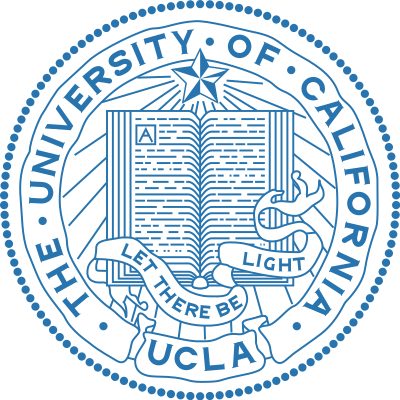

-
 University of Science and Technology of China (USTC, C9 League, Project 985)
University of Science and Technology of China (USTC, C9 League, Project 985)
School of Artificial Intelligence and Data Science | 2025.9 - 2028.7
Master of Philosophy in Intelligence Science and Technology -
Southwest University (SWU, Project 211)
Yuan-Longping Program, Hanhong Honors College | 2021.9 - 2025.7
Bachelor of Engineer in Computer Science and Technology -

University of California, Los Angeles (UCLA)
Visiting Student in Data Science | 2022.9 - 2023.1
Welcome to my homepage! 🥰
Haoqin Hong completed his undergraduate studies in 2025 at the Hanhong Honors College, Yuan-Longping Program at Southwest University, earning a B.Eng in Computer Science and Technology under the guidance of Prof. Xiaofang Hu. Starting in September 2025, he will pursue an M.Phil degree in Artificial Intelligence at the School of Artificial Intelligence and Data Science, USTC, supervised by Prof. Jingrun Chen (NSFC Distinguished Young Scholar), and he will also collaborate with Associate Researcher Congcong Zhu on Computer Vision. He did research internships at companies or institute such as iFlyTek Research. Currently, he is a Kaggle Expert, served as a program committee member for the AAAI international conference, and as a reviewer for international conferences and journals such as IJCAI and IJCNN.
-
Haoqin Hong's research interests focus on:
- Physics-Inspired World Model
- Robotic Perception with 3D Vision and Multimodal Learning
- Generative 3D Modeling and Simulation
Github
Haoqin Hong's Github
Email
HaoqinHong@outlook.com haoqinhong@mail.ustc.edu.cn honghaoqin@email.swu.edu.cn
Google Scholar
Haoqin Hong's Google Scholar
Address
Tianchen Road, High-tech West District, Chengdu, Sichuan Province, China, 611731
News
- 2025.11 🎉 My first-author paper was accepted by AAAI 2026.
- 2025.9 🎉 My coauther paper was accepted by Neurocomputing.
- 2025.4 🎉 I was selected as an Outstanding Graduate in Southwest University.
- 2024.9 🎉 I will start my M.Phil in Intelligent Science and Technology at USTC.
- 2024.7 🎉 I present at the World Congress on Computational Intelligence held in Yokohama, Japan.
- 2024.3 🎉 My first-author paper was accepted by IEEE IJCNN 2024.
- 2023.6 🎉 I have been admitted to the China Academy of Sciences Innovation Training Program.
Address Tianchen Road, High-tech West District, Chengdu, Sichuan Province, China, 611731
News
- 2025.11 🎉 My first-author paper was accepted by AAAI 2026.
- 2025.9 🎉 My coauther paper was accepted by Neurocomputing.
- 2025.4 🎉 I was selected as an Outstanding Graduate in Southwest University.
- 2024.9 🎉 I will start my M.Phil in Intelligent Science and Technology at USTC.
- 2024.7 🎉 I present at the World Congress on Computational Intelligence held in Yokohama, Japan.
- 2024.3 🎉 My first-author paper was accepted by IEEE IJCNN 2024.
- 2023.6 🎉 I have been admitted to the China Academy of Sciences Innovation Training Program.
Education Experience
Research and Internship Experience
Research Experience
-
Suzhou Key Laboratory of Artificial Intelligence, USTC.
Graduate Research Student | 2024.9 - Present -
Chongqing Key Laboratory of Brain-inspired Computing and Intelligent Control, SWU.
Undergraduate Research Student | 2022.3 - 2025.6 -
National Astronomical Observatory, Chinese Academy of Sciences.
Leader of Innovation Training Program | 2023.3 - 2024.7
Internship Experience
-
Spark Large Model Team, iFlyTek AI Research Institute
Assistant Research Algorithm Engineer (Research Intern) | 2025.9 - Present
Vision-Language-Model Post-Training via supervised Fine-Tuning and Reinforcement Learning
Publications & Awards
Publications
Articles (* Equal contribution, † Corresponding author, ‡ Project leader)
Physics-Informed Deformable Gaussian Splatting: Towards Unified Constitutive Laws for Time-Evolving Material Field.

Haoqin Hong*, Ding Fan*, Fubin Dou, Zhi-Li Zhou, Haoran Sun, Congcong Zhu†, Jingrun Chen†. Proceedings of the AAAI Conference on Artificial Intelligence. (AAAI-26, CCF-A Conference, Acceptance Rate 16.7%)
CCSPNet-Joint: Efficient Joint Training Method for Traffic Sign Detection Under Extreme Conditions.

Haoqin Hong, Yue Zhou†, Xiangyu Shu, Xiaofang Hu. Proceedings of the International Joint Conference on Neural Networks. (IJCNN 2024 Oral, CCF-C Conference)
-
Attaining Hardware-Efficient Inference in Memristor-Based Transformer Accelerator via Network Redesign.
Junze Xu, Haoqin Hong, Yue Zhou† , Xiaofang Hu, Shukai Duan. Neurocomputing. (JCR Q1, CCF-C, IF 5.5)
Chinese Invention Patent
- Speech Recognition System and Method Based on Lightweight Transformer Network.
- Text Sentiment Detection System and Method Based on Memristor.
Selected Awards
Honors and Awards
- Outstanding Individual in Innovation Capability in Chongqing.
- Outstanding Graduates in Southwest University.
- Outstanding Undergraduate Thesis of Southwest University.
- Southwest University Hanhong Foundation Student Growth and Success Scholarship.
(Top 40 among graduates of all degree levels) - Southwest University First Class Scholarship.
Competition Awards
- 🥉 Bronze Medal in Kaggle Research Competition: NeurIPS - Open Polymer Prediction 2025.
- 🥉 Bronze Medal in Kaggle Research Competition: CVPR 2025 Workshop - Image Matching Challenge.
- 🥉 Bronze Medal in Kaggle Research Competition: Google - Fast or Slow? Predict AI Model Runtime.
- 🏅 National First Prize in the DJI RoboMaster University League.
- 🏅 National First Prize in the China Robotics and Artificial Intelligence Competition.
- 🥈 National Second Prize in the China/Contemporary Undergraduate Mathematical Contest in Modeling.
- 🏅 Provincial First Prize in the National Undergraduate Electronics Design Contest.
Additional Information
Open-Source Projects
- Awesome-Physics-Inspired-Vision-Understanding

Research Collaborator
- Zhi-Li Zhou (Ph.D in Physics & Mathmatics at UIUC) @ Theoretical Physics
- Yuzhuo Chen (M.Eng in CS at USTC) @ Video Generation